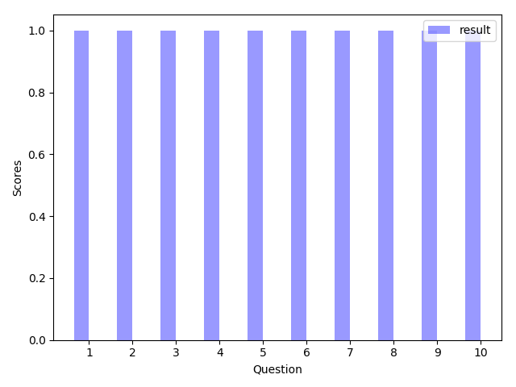

@10-2 量化評估表
|
項目 |
衡量標準 |
該項佔有比率 |
平均分數 ( 滿分 6 分 ) |
衡量權重比 |
具體執行成效 |
|
1.整體評價 |
1.就整體而言，是否給學員獲得他們所需要的知識? 2.整體活動是否流暢? |
10% |
@0-0 |
@0-1 |
@0-2 |
|
2. 事前宣傳 |
1.是否明確讓學員知道該堂課程。 2.宣傳的管道是否多樣化 3.是否讓學員從宣傳可得知主題知識之內容。 |
10% |
@1-0 |
@1-1 |
@1-2 |
|
3. 場地 |
1.空間是否舒適 2環境是否整潔 3設備是否完善 |
10% |
@2-0 |
@2-1 |
@2-2 |
|
4. 講師上課流暢度 |
1.講師的口條是否流暢 2.講師上課是否會有明顯停頓問題 |
10% |
@3-0 |
@3-1 |
@3-2 |
|
5. 講師的上課速度 |
1.講師傳達知識之速度是否會過快，使學員來不及吸收 |
10% |
@4-0 |
@4-1 |
@4-2 |
|
6.講師表達清晰度 |
1.講師對於範例及該項知識之表達是否清晰明確 |
10% |
@5-0 |
@5-1 |
@5-2 |
|
7. 主題和內容的契合度 |
1.是否離題 2.是否能符合該主題 |
10% |
@6-0 |
@6-1 |
@6-2 |
|
8. 內容理解程度 |
1.是否讓人對於該項主題想進行更深的了解 2是否吸引參加下一堂社課 3.該堂課程是否足夠吸引人去聽 |
10% |
@7-0 |
@7-1 |
@7-2 |
|
9.主題和內容契合度 |
1.是否主題與演講內容符合 |
10% |
@8-0 |
@8-1 |
@8-2 |
|
10.內容吸引程度 |
1.對上課內容是否吸引或有興趣 |
10% |
@9-0 |
@9-1 |
@9-2 |
平均分數柱狀圖示

＊衡量權重比計算標準 : [ 參加者勾選項目加總分數 / 總人數 ]* 佔有比率
活動滿意度總分:
@10-0
活動總滿意度百分比: @10-1